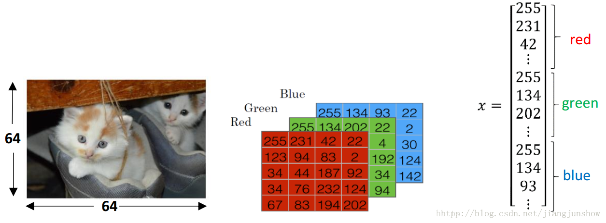

<!DOCTYPE html>
<html>
<head><meta name="generator" content="Hexo 3.8.0">
  <meta charset="utf-8">

  <!-- PACE Progress Bar START -->
  
    <script src="https://raw.githubusercontent.com/HubSpot/pace/v1.0.2/pace.min.js"></script>
    <link rel="stylesheet" href="https://github.com/HubSpot/pace/raw/master/themes/orange/pace-theme-flash.css">
  
  

  <!-- PACE Progress Bar START -->

  
  <title>人工智能初识（二）：如何将数据输入到神经网络中 | Blog of Geowind</title>
  <meta name="viewport" content="width=device-width, initial-scale=1, maximum-scale=1">
  
  <meta name="keywords" content="人工智能神经网络">
  
  
  
  
  <meta name="description" content="以特征向量的形式输入到神经网络">
<meta name="keywords" content="人工智能,神经网络">
<meta property="og:type" content="article">
<meta property="og:title" content="人工智能初识（二）：如何将数据输入到神经网络中">
<meta property="og:url" content="http://geowind.org/GeowindBlog/archives/8c3e5841.html">
<meta property="og:site_name" content="Blog of Geowind">
<meta property="og:description" content="以特征向量的形式输入到神经网络">
<meta property="og:locale" content="default">
<meta property="og:image" content="http://geowind.org/GeowindBlog/assets/2_1_1.png">
<meta property="og:updated_time" content="2018-10-23T03:57:59.000Z">
<meta name="twitter:card" content="summary">
<meta name="twitter:title" content="人工智能初识（二）：如何将数据输入到神经网络中">
<meta name="twitter:description" content="以特征向量的形式输入到神经网络">
<meta name="twitter:image" content="http://geowind.org/GeowindBlog/assets/2_1_1.png">
  
    <link rel="alternate" href="/atom.xml" title="Blog of Geowind" type="application/atom+xml">
  
  <link rel="icon" href="/GeowindBlog/css/images/favicon.ico">
  
    <link href="//fonts.googleapis.com/css?family=Source+Code+Pro" rel="stylesheet" type="text/css">
  
  <link href="https://fonts.googleapis.com/css?family=Open+Sans|Montserrat:700" rel="stylesheet" type="text/css">
  <link href="https://fonts.googleapis.com/css?family=Roboto:400,300,300italic,400italic" rel="stylesheet" type="text/css">
  <link href="https://cdn.bootcss.com/font-awesome/4.6.3/css/font-awesome.min.css" rel="stylesheet">
  <style type="text/css">
    @font-face{font-family:futura-pt;src:url(https://use.typekit.net/af/9749f0/00000000000000000001008f/27/l?subset_id=2&fvd=n5) format("woff2");font-weight:500;font-style:normal;}
    @font-face{font-family:futura-pt;src:url(https://use.typekit.net/af/90cf9f/000000000000000000010091/27/l?subset_id=2&fvd=n7) format("woff2");font-weight:500;font-style:normal;}
    @font-face{font-family:futura-pt;src:url(https://use.typekit.net/af/8a5494/000000000000000000013365/27/l?subset_id=2&fvd=n4) format("woff2");font-weight:lighter;font-style:normal;}
    @font-face{font-family:futura-pt;src:url(https://use.typekit.net/af/d337d8/000000000000000000010095/27/l?subset_id=2&fvd=i4) format("woff2");font-weight:400;font-style:italic;}</style>
    
  <link rel="stylesheet" id="athemes-headings-fonts-css" href="//fonts.googleapis.com/css?family=Yanone+Kaffeesatz%3A200%2C300%2C400%2C700&amp;ver=4.6.1" type="text/css" media="all">
  <link rel="stylesheet" href="/GeowindBlog/css/style.css">

  <script src="https://code.jquery.com/jquery-3.1.1.min.js"></script>

  <!-- Bootstrap core CSS -->
  <link rel="stylesheet" href="https://netdna.bootstrapcdn.com/bootstrap/3.0.2/css/bootstrap.min.css">
  <link rel="stylesheet" href="/GeowindBlog/css/hiero.css">
  <link rel="stylesheet" href="/GeowindBlog/css/glyphs.css">
  

  <!-- Custom CSS -->
  <link rel="stylesheet" href="/GeowindBlog/css/my.css">
  <!-- Google Adsense -->
  
</head>
</html>
<script>
var themeMenus = {};

  themeMenus["/GeowindBlog/"] = "Home"; 

  themeMenus["/GeowindBlog/archives/"] = "Archives"; 

  themeMenus["/GeowindBlog/categories/"] = "Categories"; 

  themeMenus["/GeowindBlog/tags/"] = "Tags"; 

  themeMenus["/GeowindBlog/about/"] = "About"; 

</script>


  <body data-spy="scroll" data-target="#toc" data-offset="50">


  <header id="allheader" class="site-header" role="banner">
  <div class="clearfix container">
      <div class="site-branding">

          <h1 class="site-title">
            
              <a href="/GeowindBlog/" rel="home">
                
              </a>
            
          </h1>

          
            <div class="site-description">Everyone make a difference , Geowind Here</div>
          
            
          <nav id="main-navigation" class="main-navigation" role="navigation">
            <a class="nav-open">Menu</a>
            <a class="nav-close">Close</a>
            <div class="clearfix sf-menu">

              <ul id="main-nav" class="nmenu sf-js-enabled">
                    
                      <li class="menu-item menu-item-type-custom menu-item-object-custom menu-item-home menu-item-1663"> <a class="" href="/GeowindBlog/">Home</a> </li>
                    
                      <li class="menu-item menu-item-type-custom menu-item-object-custom menu-item-home menu-item-1663"> <a class="" href="/GeowindBlog/archives/">Archives</a> </li>
                    
                      <li class="menu-item menu-item-type-custom menu-item-object-custom menu-item-home menu-item-1663"> <a class="" href="/GeowindBlog/categories/">Categories</a> </li>
                    
                      <li class="menu-item menu-item-type-custom menu-item-object-custom menu-item-home menu-item-1663"> <a class="" href="/GeowindBlog/tags/">Tags</a> </li>
                    
                      <li class="menu-item menu-item-type-custom menu-item-object-custom menu-item-home menu-item-1663"> <a class="" href="/GeowindBlog/about/">About</a> </li>
                    
              </ul>
            </div>
          </nav>


      </div>
  </div>
</header>


  <div id="container">
    <div id="wrap">
            
      <div id="content" class="outer">
        
          <section id="main" style="float:none;"><article id="post-人工智能初识（二）：如何将数据输入到神经网络中" style="width: 66%; float:left;" class="article article-type-post" itemscope="" itemprop="blogPost">
  <div id="articleInner" class="clearfix post-1016 post type-post status-publish format-standard has-post-thumbnail hentry category-template-2 category-uncategorized tag-codex tag-edge-case tag-featured-image tag-image tag-template">
    
    
      <header class="article-header">
        
  
    <h1 class="thumb" itemprop="name">
      人工智能初识（二）：如何将数据输入到神经网络中
    </h1>
  

      </header>
    
    <div class="article-meta">
      
	Posted on <a href="/GeowindBlog/archives/8c3e5841.html" class="article-date">
	  <time datetime="2018-10-23T03:57:59.000Z" itemprop="datePublished">October 23, 2018</time>
	</a>

      
	<span id="busuanzi_container_page_pv">
	  本文总阅读量<span id="busuanzi_value_page_pv"></span>次
	</span>

    </div>
    <div class="article-entry" itemprop="articleBody">
      
        <p>以特征向量的形式输入到神经网络<br><a id="more"></a></p>
<p>#人工智能初识（二）：如何将数据输入到神经网络中 #</p>
<hr>
<p>如何将数据输入到神经网络中?例如，在语音识别、人脸识别这些应用中，是如何将语音、人脸输入到神经网络中的？<br>下面我继续拿识别猫的例子来给大家介绍如何将猫的图片数据输入到神经网络中。<br><br>此例中，待输入的数据是一张图像。为了存储图像，计算机要存储三个独立的矩阵（矩阵可以理解成二维数组），分别与此图像的红色、绿色和蓝色相对应（世界上的所有颜色都可以通过红绿蓝三种颜色调配出来）。如果图像的大小是64 <em> 64个像素（一个像素就是一个颜色点，一个颜色点由红绿蓝三个值来表示，例如，红绿蓝为255,255,255，那么这个颜色点就是白色），所以3个64 </em> 64大小的矩阵在计算机中代表了这张图像，矩阵对应于图像的红绿蓝强度值。上图中只画了个5 <em> 4的矩阵，而不是64 </em> 64，为什么呢？因为没有必要，搞复杂了反而不易于理解。</p>
<p>为了更加方便后面的处理，我们一般把上面那3个矩阵转化成1个向量x（向量可以理解成1 <em> n或n </em> 1的数组，前者为行向量，后者为列向量）。那么这个向量x的总维数就是64 <em> 64 </em> 3，结果是12288。在人工智能领域中，每一个输入到神经网络的数据都被叫做一个特征，那么上面的这张图像中就有12288个特征。这个12288维的向量也被叫做特征向量。神经网络接收这个特征向量x作为输入，并进行预测，然后给出相应的结果。</p>
<p>对于不同的应用，需要识别的对象不同，有些是语音有些是图像有些是传感器数据，但是它们在计算机中都有对应的数字表示形式，通常我们会把它们转化成一个特征向量，然后将其输入到神经网络中。</p>
<p>到这里，我们已经知道数据是如何被输入到神经网络中的。那么神经网络是如何根据这些数据进行预测的呢？我们将一张图片输入到神经网络中，神经网络是如何预测这张图中是否有猫的呢？去看下一篇。</p>

      
    </div>
    <footer class="entry-meta entry-footer">
      
	<span class="ico-folder"></span>
    <a class="article-category-link" href="/GeowindBlog/categories/人工智能初识/">人工智能初识</a>, <a class="article-category-link" href="/GeowindBlog/categories/人工智能初识/（二）/">（二）</a>

      
  <span class="ico-tags"></span>
  <ul class="article-tag-list"><li class="article-tag-list-item"><a class="article-tag-list-link" href="/GeowindBlog/tags/人工智能/">人工智能</a></li><li class="article-tag-list-item"><a class="article-tag-list-link" href="/GeowindBlog/tags/神经网络/">神经网络</a></li></ul>

      
            
      
        
	<div id="comment">
		<!-- 来必力City版安装代码 -->
		<div id="lv-container" data-id="city" data-uid="MTAyMC8yOTQ4MS82MDQ5">
		<script type="text/javascript">
		   (function(d, s) {
		       var j, e = d.getElementsByTagName(s)[0];

		       if (typeof LivereTower === 'function') { return; }

		       j = d.createElement(s);
		       j.src = 'https://cdn-city.livere.com/js/embed.dist.js';
		       j.async = true;

		       e.parentNode.insertBefore(j, e);
		   })(document, 'script');
		</script>
		<noscript>为正常使用来必力评论功能请激活JavaScript</noscript>
		</div>
		<!-- City版安装代码已完成 -->
	</div>


      
    </footer>
  </div>
  
    
<nav id="article-nav">
  
  
    <a href="/GeowindBlog/archives/d08677b4.html" id="article-nav-older" class="article-nav-link-wrap">
      <strong class="article-nav-caption">Older</strong>
      <div class="article-nav-title">人工智能初识（一）：什么使深度学习火了</div>
    </a>
  
</nav>

  
</article>

<!-- Table of Contents -->

  <aside id="sidebar">
    <div id="toc" class="toc-article">
    <strong class="toc-title">Contents</strong>
    
      <ol class="nav">None</ol>
    
    </div>
  </aside>
</section>
        
      </div>
      <footer id="footer" class="site-footer">
  

  <div class="clearfix container">
      <div class="site-info">
	      &copy; 2018 Blog of Geowind All Rights Reserved.
          
            <span id="busuanzi_container_site_uv">
              本站访客数<span id="busuanzi_value_site_uv"></span>人次  
              本站总访问量<span id="busuanzi_value_site_pv"></span>次
            </span>
          
      </div>
      <div class="site-credit">
        Theme by <a href="https://github.com/iTimeTraveler/hexo-theme-hiero" target="_blank">hiero</a>
      </div>
  </div>
</footer>


<!-- min height -->

<script>
    var contentdiv = document.getElementById("content");

    contentdiv.style.minHeight = document.body.offsetHeight - document.getElementById("allheader").offsetHeight - document.getElementById("footer").offsetHeight + "px";
</script>

<!-- Custome JS -->
<script src="/GeowindBlog/js/my.js"></script>
    </div>
    <!-- <nav id="mobile-nav">
  
    <a href="/GeowindBlog/" class="mobile-nav-link">Home</a>
  
    <a href="/GeowindBlog/archives/" class="mobile-nav-link">Archives</a>
  
    <a href="/GeowindBlog/categories/" class="mobile-nav-link">Categories</a>
  
    <a href="/GeowindBlog/tags/" class="mobile-nav-link">Tags</a>
  
    <a href="/GeowindBlog/about/" class="mobile-nav-link">About</a>
  
</nav> -->
    

<!-- mathjax config similar to math.stackexchange -->

<script type="text/x-mathjax-config">
  MathJax.Hub.Config({
    tex2jax: {
      inlineMath: [ ['$','$'], ["\\(","\\)"] ],
      processEscapes: true
    }
  });
</script>

<script type="text/x-mathjax-config">
    MathJax.Hub.Config({
      tex2jax: {
        skipTags: ['script', 'noscript', 'style', 'textarea', 'pre', 'code']
      }
    });
</script>

<script type="text/x-mathjax-config">
    MathJax.Hub.Queue(function() {
        var all = MathJax.Hub.getAllJax(), i;
        for(i=0; i < all.length; i += 1) {
            all[i].SourceElement().parentNode.className += ' has-jax';
        }
    });
</script>

<script type="text/javascript" src="https://cdnjs.cloudflare.com/ajax/libs/mathjax/2.7.4/MathJax.js?config=TeX-AMS-MML_HTMLorMML">
</script>


  <link rel="stylesheet" href="https://cdnjs.cloudflare.com/ajax/libs/fancybox/2.1.5/jquery.fancybox.min.css">
  <script src="https://cdnjs.cloudflare.com/ajax/libs/fancybox/2.1.5/jquery.fancybox.min.js"></script>


<script src="/GeowindBlog/js/scripts.js"></script>
<script src="https://stackpath.bootstrapcdn.com/bootstrap/3.3.7/js/bootstrap.min.js"></script>
<script src="/GeowindBlog/js/main.js"></script>


  <div style="display: none;">
    <script src="https://s95.cnzz.com/z_stat.php?id=1260716016&web_id=1260716016" language="JavaScript"></script>
  </div>


	<script async src="https://dnqof95d40fo6.cloudfront.net/atw7f8.js">
	</script>


  </div>

  <a id="rocket" href="#top" class=""></a>
  <script type="text/javascript" src="/js/totop.js" async=""></script>
</body>
</html>
